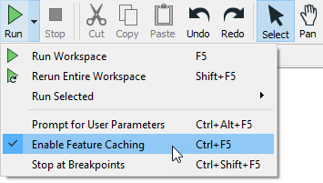
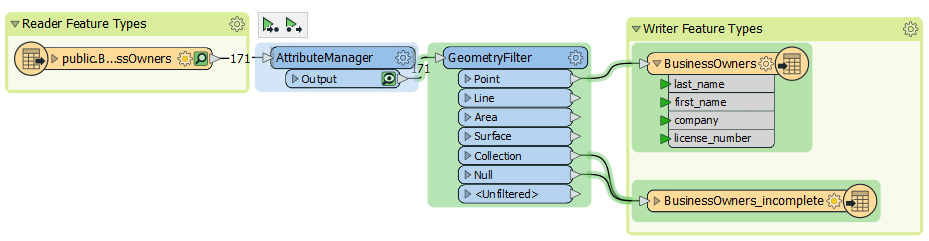

After completing this unit, you’ll be able to:
Jennifer has edited her data’s schema using an AttributeManager. She knows that the data changed because she can see the colored attribute ports, which show successful schema mapping. However, Jennifer wants to see the changes to her data in Visual Preview.
Jennifer can do this using feature caching. Feature caching is an authoring mode set on the Run menu and enabled by default. When enabled, a local cache of data is stored at every output port in the workspace. These caches let you view and compare data at any point in your workspace.
Jennifer continues to work in FME Workbench (2021.0 or later). Now that she has set up her AttributeManager and run the workspace, Jennifer sees a cache on the transformer. Caches are indicated by a green magnifying glass icon. She clicks it to open that cache in Visual Preview.
Feature caching is great when you are authoring a workspace. It lets you use iterative and incremental development to add one transformer or feature type at a time, create a cache, and inspect it to confirm the data looks as you expect. It is particularly useful when working with web, database, or compressed data, allowing you to download, query, or extract the data once and work with a cache, saving time and effort when reading large datasets or making API calls. However, creating these caches takes time, so it’s wise to disable this mode when you want FME to run at peak efficiency.
Feature caching can be disabled by clicking the drop-down triangle next to Run to access the Run menu, then deselecting Enable Feature Caching.

Jennifer will use another feature, partial runs, to speed her authoring of workspaces and debug them as she works.
Partial runs allow you to run specified sections of your workspace instead of the entire thing. This feature works in tandem with feature caches to enable incremental development. When you add a new transformer or feature type, you can run that new object independently and inspect its cache for any problems. Authoring workspaces this way saves time by allowing you to detect and fix problems early.
Jennifer wants to run her workspace to ensure the AttributeManager worked properly. She could just click Run > Rerun Entire Workspace. However, as workspaces grow in size, it’s better to just run the section that changed. She does this by clicking the AttributeManager to select it, then clicking Run To This above the transformer. She can see what part of the workspace will run because it is highlighted in green.

The relevant section of the workspace runs. When it’s finished, Visual Preview will show the features coming out of the AttributeManager output port. Jennifer looks at Table View to ensure that the schema appears as she intended. It does.

Now that she’s confirmed the schema is correct, Jennifer wants to write the data, so she clicks Run. Notice how the reader feature type is not highlighted in green. FME will use its cache instead of reading the data again. The rest of the workspace runs and her data is written.

Make sure you have followed along with Jennifer’s steps.